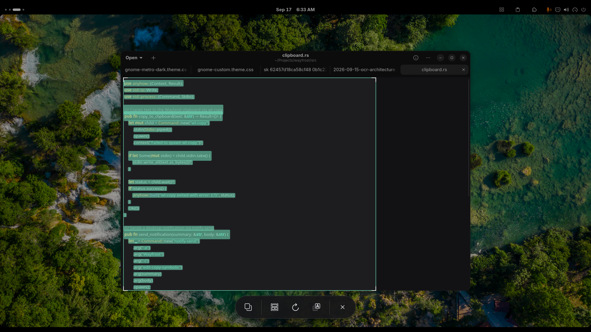

1.0 çağır · 2.0 seç · 3.0 yapıştır
Ekrandaki yazı, üç kayıt.
Wayfrost, Wayland üzerinde çalışan hafif ve yerel bir metin çıkarma aracı. Aşağıdaki üç aşama, ürünün tamamı.
Çağır
Super + Shift + T ile Wayfrost’u çağır. Kurulum bu kısayolu GNOME’a tanımlar; ekran donar, seçim katmanı açılır.
Seç
Okumak istediğin bölgeyi çerçevele. Ters seçim ve boş seçim güvenli şekilde ele alınır; çıkmak için ESC yeterli, arkada pencere kalmaz.

Yapıştır
Tanınan metin doğrudan sistem panosuna yazılır. Uçbirimde ya da düzenleyicide yapıştır; Türkçe karakterler kayıpsız gelir.
Kayıt dökümü
- Türkçe tam destek
- ç, ğ, ı, İ, ö, ş, ü ve büyük harf karşılıkları kayıpsız tanınır.
- Doğru okuma sırası
- 2B uzaysal satır kümeleme; metin karışmadan, satır sırasıyla gelir.
- Yerel arayüz
- GTK4 ve Libadwaita ile masaüstüne ait görünen hızlı bir seçim katmanı.
- Esnek tanıma
- Tesseract tessdata_best ve ONNX model desteği aynı kurulumda.
Deftere işle
Depoyu klonla, betiği çalıştır. Bağımlılıklar dağıtımına göre kurulur, ikili derlenir, kısayol tanımlanır.
git clone https://github.com/Lowell137/wayfrost.git cd wayfrost chmod +x install.sh ./install.sh
Arch / Manjaro / CachyOS bağımlılıkları
sudo pacman -S --needed --noconfirm base-devel rust cargo gtk4 libadwaita tesseract tesseract-data-tur tesseract-data-eng git openssl pkgconf
Debian / Ubuntu / Pop!_OS / Mint bağımlılıkları
sudo apt update && sudo apt install -y build-essential cargo rustc libgtk-4-dev libadwaita-1-dev tesseract-ocr tesseract-ocr-tur tesseract-ocr-eng git libssl-dev pkg-config
Fedora / RHEL / CentOS bağımlılıkları
sudo dnf install -y gcc-c++ cargo rust gtk4-devel libadwaita-devel tesseract tesseract-langpack-tur tesseract-langpack-eng git openssl-devel pkg-config
İkili ~/.local/bin/wayfrost altına düşer; GNOME uzantısı wayfrost@lowell kurulur. Uzantı hemen görünmezse GNOME Shell’i yeniden başlat ya da oturumu kapatıp aç.